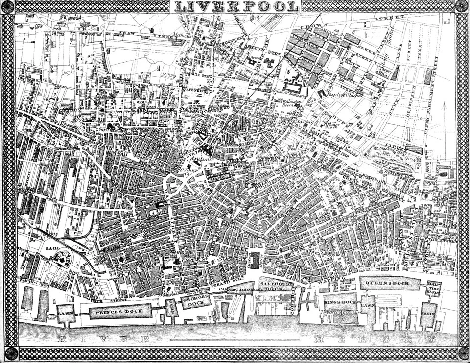

Railways and postal routes
Arrive at Preston in 1839 and find the next North Union Railway departure. Change the arrival time or try the Sunday timetable with a four-minute transfer.
Inspect source image

Arrive at Preston in 1839 and find the next North Union Railway departure. Change the arrival time or try the Sunday timetable with a four-minute transfer.
